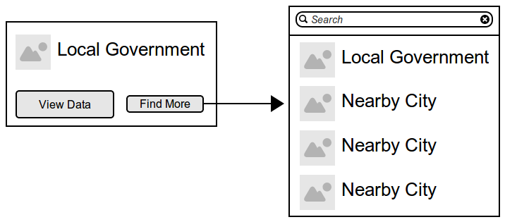
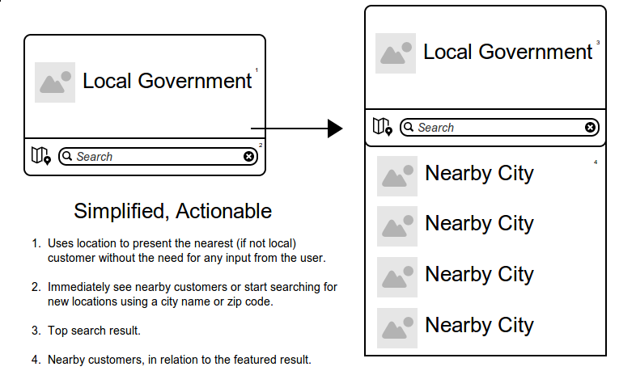

Curious about becoming an OpenGov customer, wants to see other governments using the service (proving credibility).
Showing her the closest customers brings the possibility of easily reaching out for a recommendation.
Looking to see if her local government is an OpenGov customer and/or to browse data.
Future Idea: If her local government is missing, encourage her to speak out and let them know she wants to see their data opened (using social media or some ‘petitioning’ system).
Tasks: present user with the closest customer, allow them to view more, and give them the option to manually input a new location.
First Pass: Addressing all tasks individually.

Second Pass: Addressing all tasks at once, removing unnecessary steps.
